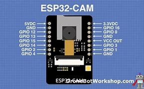

Internet is unique identifier to the device over the internet.
Helps the internet to identify different types of routers,computers and websites.Types of interne protocols are TCP/IP(Transmission Control Protocol/ Internet Protocol) SMTP(Simple Mail Transfer Protocol), PPP(Point-to-Point Protocol), FTP (File Transfer Protocol), SFTP(Secure File Transfer Protocol), HTTP(Hyper Text Transfer Protocol), HTTPS(HyperText Transfer Protocol Secure), TELNET(Terminal Network), POP3(Post Office Protocol 3), IPv4, IPv6, ICMP, UDP, IMAP, and SSH,
Open System Interconnection has seven layer the data is trasmitted.
1.Physical layer-this layer deals with the actual hardware aspect. When receiving data, this layer will get the signal received and convert it into 0s and 1s and send them to the Data Link layer, which will put the frame back together.
2.Data Link Layer (DLL)-The main function of this layer is to make sure data transfer is error-free from one node to another, over the physical layer.The Data Link Layer is divided into two sublayers: Logical Link Control (LLC),Media Access Control (MAC).
3.Network Layer – It also takes care of packet routing i.e. selection of the shortest path to transmit the packet, from the number of routes available.Function of the network layer is to route the network layer protocols determine which route is suitable from source to destination. This function of the network layer is known as routing.
4.Transport Layer – The data in the transport layer is referred to as Segments.The transport layer receives the formatted data from the upper layers, performs Segmentation, and also implements Flow & Error control to ensure proper data transmission.
5.Session Layer –This layer is responsible for the establishment of connection, maintenance of sessions, and authentication, and also ensures security.
6.Presentation Layer –The data from the application layer is extracted here and manipulated as per the required format to transmit over the network.
7.Application Layer –also knonwn as Desktop Layer.Helps in identifying the client and synchronizing communication.
Transmission Control Protocal-The main condition of this process is to make data reliable and accurate so that the receiver will receive the same information which is sent by the sender.Has 4 layers.
1.Application Layer- consists of HTTP,HTTPS,TELNET AND NTP.
2.Transport Layer -The TCP/IP transport layer protocols exchange data receipt acknowledgments and retransmit missing packets to ensure that packets arrive in order and without error.
3.Data Link Layer-Error prevention and “framing” are also provided by the data-link layer.
4.Physical Layer- It acts on behalf of the sender and the Network Access layer on the behalf of the receiver.
Advanced esp32wroom this has image tracking and recognition.Using port A- Thinker ESP32CAM.

#include "esp_camera.h"
#include
#define CAMERA_MODEL_AI_THINKER
#include "camera_pins.h"
const char* ssid = "Gearbox Members";
const char* password = "xxxxxxxxxx";
void startCameraServer();
void setupLedFlash(int pin);
void setup() {
Serial.begin(115200);
Serial.setDebugOutput(true);
Serial.println();
camera_config_t config;
config.ledc_channel = LEDC_CHANNEL_0;
config.ledc_timer = LEDC_TIMER_0;
config.pin_d0 = Y2_GPIO_NUM;
config.pin_d1 = Y3_GPIO_NUM;
config.pin_d2 = Y4_GPIO_NUM;
config.pin_d3 = Y5_GPIO_NUM;
config.pin_d4 = Y6_GPIO_NUM;
config.pin_d5 = Y7_GPIO_NUM;
config.pin_d6 = Y8_GPIO_NUM;
config.pin_d7 = Y9_GPIO_NUM;
config.pin_xclk = XCLK_GPIO_NUM;
config.pin_pclk = PCLK_GPIO_NUM;
config.pin_vsync = VSYNC_GPIO_NUM;
config.pin_href = HREF_GPIO_NUM;
config.pin_sccb_sda = SIOD_GPIO_NUM;
config.pin_sccb_scl = SIOC_GPIO_NUM;
config.pin_reset = RESET_GPIO_NUM;
config.xclk_freq_hz = 20000000;
config.frame_size = FRAMESIZE_UXGA;
config.pixel_format = PIXFORMAT_JPEG; // for streaming
//config.pixel_format = PIXFORMAT_RGB565; // for face detection/recognition
config.grab_mode = CAMERA_GRAB_WHEN_EMPTY;
config.fb_location = CAMERA_FB_IN_PSRAM;
config.jpeg_quality = 12;
config.fb_count = 1;
// if PSRAM IC present, init with UXGA resolution and higher JPEG quality
// for larger pre-allocated frame buffer.
if(config.pixel_format == PIXFORMAT_JPEG){
if(psramFound()){
config.jpeg_quality = 10;
config.fb_count = 2;
config.grab_mode = CAMERA_GRAB_LATEST;
} else {
// Limit the frame size when PSRAM is not available
config.frame_size = FRAMESIZE_SVGA;
config.fb_location = CAMERA_FB_IN_DRAM;
}
} else {
// Best option for face detection/recognition
config.frame_size = FRAMESIZE_240X240;
#if CONFIG_IDF_TARGET_ESP32S3
config.fb_count = 2;
#endif
}
#if defined(CAMERA_MODEL_ESP_EYE)
pinMode(13, INPUT_PULLUP);
pinMode(14, INPUT_PULLUP);
#endif
// camera init
esp_err_t err = esp_camera_init(&config);
if (err != ESP_OK) {
Serial.printf("Camera init failed with error 0x%x", err);
return;
}
sensor_t * s = esp_camera_sensor_get();
// initial sensors are flipped vertically and colors are a bit saturated
if (s->id.PID == OV3660_PID) {
s->set_vflip(s, 1); // flip it back
s->set_brightness(s, 1); // up the brightness just a bit
s->set_saturation(s, -2); // lower the saturation
}
// drop down frame size for higher initial frame rate
if(config.pixel_format == PIXFORMAT_JPEG
s->set_framesize(s, FRAMESIZE_QVGA);
}
#if defined(CAMERA_MODEL_M5STACK_WIDE) || defined(CAMERA_MODEL_M5STACK_ESP32CAM)
s->set_vflip(s, 1);
s->set_hmirror(s, 1);
#endif
#if defined(CAMERA_MODEL_ESP32S3_EYE)
s->set_vflip(s, 1);
#endif
// Setup LED FLash if LED pin is defined in camera_pins.h
#if defined(LED_GPIO_NUM)
setupLedFlash(LED_GPIO_NUM);
#endif
WiFi.begin(ssid, password);
WiFi.setSleep(false);
while (WiFi.status() != WL_CONNECTED) {
delay(500);
Serial.print(".");
}
Serial.println("");
Serial.println("WiFi connected");
startCameraServer();
Serial.print("Camera Ready! Use 'http://");
Serial.print(WiFi.localIP());
Serial.println("' to connect");
}
void loop() {
// Do nothing. Everything is done in another task by the web server
delay(10000);
}
The cctv operates on a closed loop this means it gives feedback.
Camera -Captures the video footage and its the hearts.
Lens -determines the field of view and focal length.
Image sensor -has metal oxide semiconductor that converts light into electrical signals to create video.
Recording video -this stores recorded footage like NVR $ DVR.
Dome cameras ,Bullet cameras,PTZ cameras and Day/Night cameras
All this cameras are supposed to be installed Front door,Back door and First floor.
For setup Cat 5,Cat 6 cables are used for large amount of data required by digital and high resolution over long distances.For you to obtain the IP address for the camera ,Wi-Fi must be setup to get the IP address.
Network Video Recorder-Allows you to record and store clips on a hard drive and transmit them to the computer and connected to the same IP address.
NVR maintains high quality videos even in long distances also used to stream in real-time and more compatible with digital cameras.Security footage is staored for 30 days this requires atleast 8 Terabyte ana stored in the cloud.
For the practical we used HIKVISION camera for best quality video standards.
For 2MP IP camera we used 4 channel NVR machine that supports only 4 cameras.While setting up the NVR a password is required for access.The cameras atomatically takes in the password.
Cat 6 cable was used since its an IP camera.Power over Ethernet(POE) this means that they is no need to power the the camera since the cable carries the power.Before installation of the cameras a quotation of prices is done to know what is required for the installation.
Here is a flow chart to indicate how setup is done.https://drive.google.com/file/d/1tksoCiEbJ6iJVIwzsdAmBkYHYAxuuvVv/view?usp=sharing
High quality cameras are analog camera that have (720-1080p) resolution and uses DVR OR NVR to store the footage.